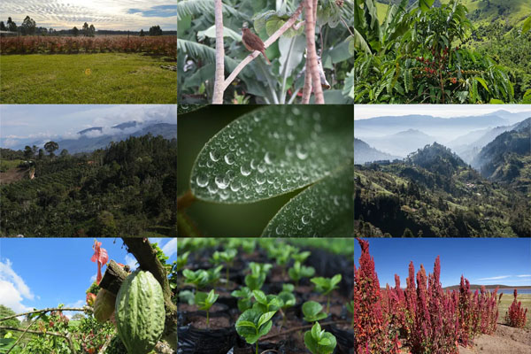
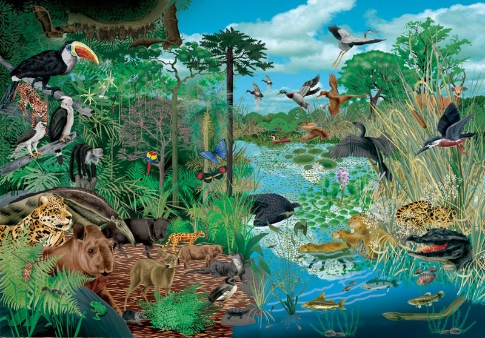
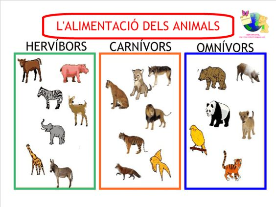

Ecosistema Terrestre
Concepto
El ecosistema terrestre se refiere a un sistema biológico complejo que engloba todos los organismos vivos,
tanto animales como vegetales, y los factores no vivos que interactúan en un entorno terrestre
determinado. Estos factores incluyen el suelo, el agua, el aire y la luz solar.
Tipos de Ecosistemas Terrestres
Bosques
Los bosques son ecosistemas terrestres dominados por árboles. Pueden clasificarse en diferentes tipos,
como bosques tropicales, bosques boreales y bosques templados. Son hogar de
una gran diversidad de plantas, animales y microorganismos.
Praderas
Las praderas son ecosistemas caracterizados por una vegetación herbácea y escasa presencia de árboles.
Pueden ser praderas de pastizales o estepas, y se encuentran en diferentes regiones del mundo.
Son hábitats para una variedad de especies animales, como herbívoros y pequeños mamíferos.
Desiertos
Los desiertos son ecosistemas áridos que reciben muy poca precipitación. Pueden ser desiertos cálidos,
como el Sahara, o desiertos fríos, como el desierto de Gobi. La vida en los desiertos está adaptada
a las condiciones extremas, con plantas y animales adaptados a la escasez de agua.
Flora del Ecosistema Terrestre
La flora del ecosistema terrestre varía según el tipo de ecosistema, pero incluye una amplia gama
de plantas adaptadas a las condiciones locales. Algunas plantas comunes en
los ecosistemas terrestres son:
-
Árboles:
Robles, pinos, palmas y abetos. -
Hierbas:
Pasto, trigo, avena y arroz. -
Arbustos:
Matorrales, brezos y espinos. -
Cactáceas:
Cactus, adaptados a las condiciones desérticas.
Fauna del Ecosistema Terrestre
El ecosistema terrestre alberga una amplia variedad de fauna, adaptada a diferentes
tipos de hábitats terrestres, como bosques, praderas, desiertos y tundras. A continuación,
te mencionaré algunos ejemplos de la fauna que se encuentra en el ecosistema terrestre:
-
Mamíferos:
Leones, tigres, elefantes,
-
Aves:
Águilas, Búhos, Halcones, Colibríes, Pájaros cantores -
Arácnidos:
Arañas, Escorpiones -
Reptiles:
Serpientes, Lagartos, Iguanas, Cocodrilo
Características de los Ecosistemas Terrestres
- Diversidad biológica: Los ecosistemas terrestres albergan una amplia variedad de especies, desde microorganismos hasta grandes animales.
- Interacciones complejas: Existe una red de interacciones entre los organismos vivos y los componentes no vivos del ecosistema, como la depredación, la simbiosis y la descomposición.
- Ciclos biogeoquímicos: Los nutrientes y elementos químicos clave, como el carbono, el nitrógeno y el fósforo, circulan en los ecosistemas terrestres a través de procesos biológicos y geológicos.
- Sensibilidad a los cambios: Los ecosistemas terrestres son sensibles a las perturbaciones y cambios ambientales, como la deforestación, la contaminación y el cambio climático.
- Servicios ecosistémicos: Estos ecosistemas proporcionan una serie de beneficios a los seres humanos, como la producción de alimentos, la regulación del clima, la protección contra inundaciones, entre otros.
Tipos de animales
Carnívoros
Es aquella fauna o animales que se alimentan de la carne de donde extraen sus nutrientes y
energía para vivir. Sporting de un aparato más complejo que los herbívoros o los omnívoros
y más musculoso, además de colmillos y garras que le permiten tanto cazar cómo comer de una
forma más sencilla. Ejemplos representativos tendríamos los leones, los lobos…etc.
Herbívoros
Son aquellos que se alimentan únicamente de vegetación y plantas por lo que tienes un estómago
mucho más simple con la diferencia que los procesos digestivos son más la y complejos para consumir
los nutrientes necesarios en su alimentación. Como ejemplo estaría en las cabras, los elefantes, los caballos…etc.
Omnívoro
Son los animales terrestres que tiene una dieta mixta, que consumen tanto vegetales como carne,
por lo que tienen un aparato digestivo más desarrollado que los herbívoros y por ello pueden adaptarse
mejor a diferentes tipos de ecosistemas. Como ejemplos representativos tendríamos las avestruces, los cerdos,
osos, los erizos…etc.